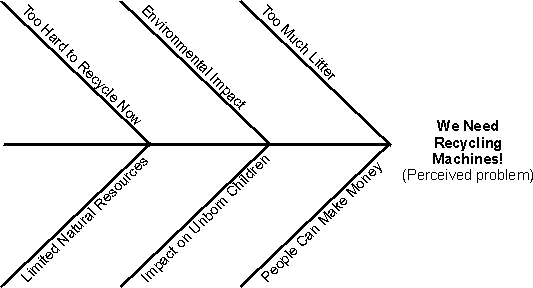

|
Составление диаграмм причинно-следственных связей - один из методов определения коренной причины проблемы. Каждый
отросток диаграммы представляет собой одну из причин проблемы.
После определения коренных причин выберите, какая из них в большей степени влияет на возникновение проблемы. Обычно
действует соотношение 80 к 20, то есть 20 процентов корневых причин влияют на 80 процентов проблемы.
После выделения 20 процентов корневых причин рекомендуется добавить в диаграмму и другие причины, чтобы лучше понять,
как можно устранить корневые причины.

Пример диаграммы причинно-следственных связей для системы по переработке отходов.
|